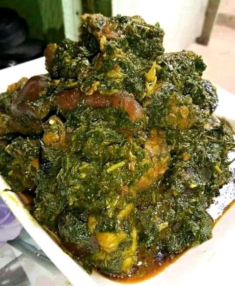

Afang Soup Recipe

Ingredients
- Afang leaves
- Waterleaf
- Stock fish
- Catfish (dried)
- Perewinkle
- Palm oil
- Seasoning cubes
- Salt
- Beef
- Crayfish
- pepper
- Water
- Onions
Procedure
Before you cook the Nigerian Afang Soup
- 1. Wash, drain and slice the water leaves into tiny pieces.
- 2. Grind or pound the sliced afang leaves.
- 3. Grind your pepper and crayfish and cut the onions into tiny pieces.
Steps
- Boil the beef with the diced onions, seasoning cubes, pepper and salt for about 15 minutes and then add a little water to obtain the stock.
- Wash the dry fish and the stockfish into the pot
- Add palm oil and water and put it on fire.
- When it is boiled, add waterleaf, crayfish, perewinkle the seasoned beef, salt, pepper and seasoning cubes to taste and leave to simmer for about 5 minutes
- Add the afang leaves.
The Afang soup is ready.